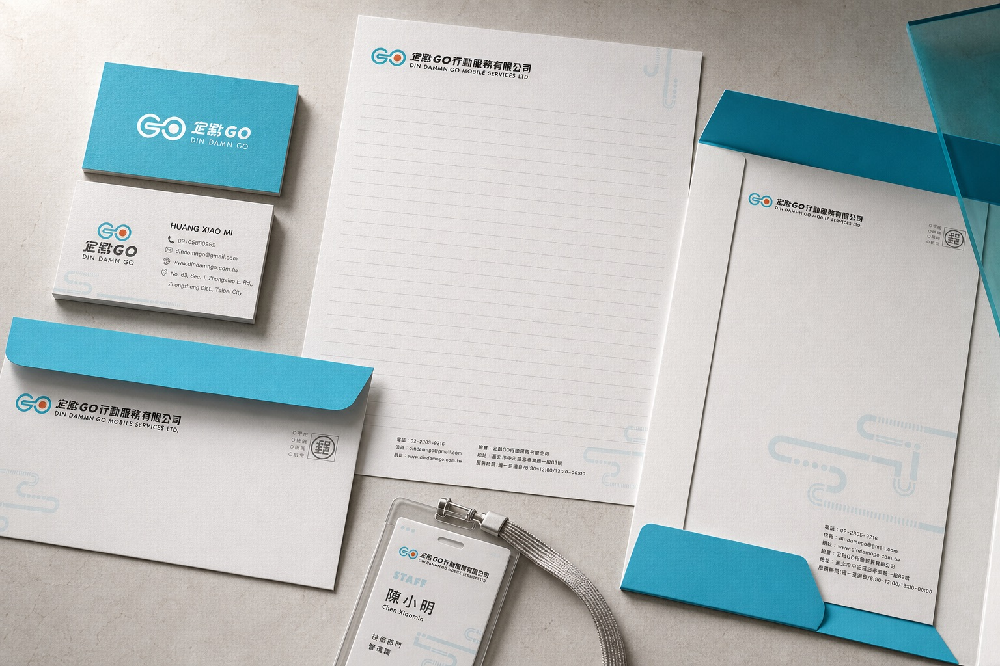

作品檔案 01 / 精選專案
OTHERPROJECTS.
收錄品牌識別、平面設計、數位產品與互動實驗。沿著不同專案的脈絡，看見設計如何從概念走向可被使用的成果。
精選作品集BRAND / DIGITAL / GRAPHIC2023—2026
查看全部作品 ↘

定點 GO 品牌應用
作品檔案 01 / 精選專案
收錄品牌識別、平面設計、數位產品與互動實驗。沿著不同專案的脈絡，看見設計如何從概念走向可被使用的成果。
